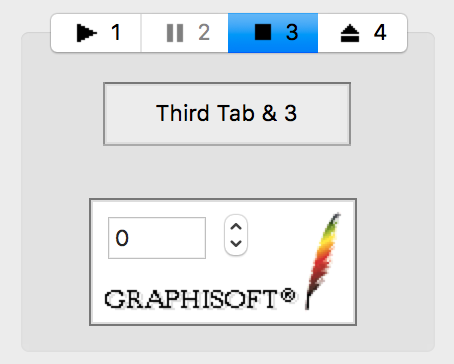
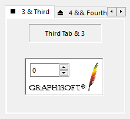

Tab Control
A tab control defines multiple pages for the same area of a dialog. Each page consists of a group of controls that the application displays when the user selects the corresponding tab. There are two types of tab controls: the normal tab control and the simple tab control.
Every tab control has a display area in which the application displays the current page. Tab pages are assigned to the tab control items. See Tab Pages for details of how to create, destroy and modify parameters of tab pages.
A normal tab control has a three-dimensional raised border and it displays one row of tab item labels above the display area. The user can click on the labels to change the currently displayed page. On Windows, tab controls can have the keyboard focus that is indicated by a focus rectangle drawn around the label of the currently selected page. When a tab control has the keyboard focus, the user can select other tab items by pressing Home, End or the horizontal arrow keys. Each tab item label consists of an optional icon and a text, the icon is always adjusted to the left of the text. On Windows, if not all labels can be shown at the same time, the tab control displays a horizontal spin control so that the user can scroll additional tab item labels into view. On Macintosh, there is no such feature of tab controls, tab item labels are clipped at the end of the row.
A simple tab control is not an interactive dialog item, it simply serves as a container of tab pages. This type of tab control has no tab item labels, it can be operated by other controls of the same dialog. For example, a group of push-like radio buttons is a good choice for this purpose. The application can link the radio buttons and the simple tab control so when the user clicks on a radio button, the corresponding tab page will be displayed. By default, a simple tab control has no frame, but it can have a three-dimensional raised border.
Item type
- DG_ITM_TABCONTROL
Subtypes
-
Subtype Meaning DG_TT_NORMALTAB Normal tab control.
 
DG_TT_SIMPLETAB Simple tab control.
GRC Specification
NormalTab x y dx dy
dlgID1 iconID1 "labelText1"
...
dlgIDi iconIDi "labelTexti"
...
dlgIDn iconIDn "labelTextn"
SimpleTab x y dx dy [frameType]
dlgID1
...
dlgIDi
...
dlgIDn
where x and y are the pixel coordinates of the upper left corner of the tab control, dx and dy are the width and height of the control in pixels. The dlgIDi, iconIDi and labelTexti (1 <= i <= n) parameters initialize n pieces of tab pages and their tab items. dlgIDi is the resource ID of the i-th tab page resource in GRC. iconIDi and labelTexti defines the icon and the label text (given between two quotation marks) of the i-th tab item. If the optional frameType flag is omitted, the simple tab control is drawn with a three-dimensional raised border. If you want a frameless simple tab control set this flag to noFrame.
Possible values of iconIDi:
-
Value Meaning NoIcon The i-th tab item has no icon. 129 <= iconID <= SHRT_MAX The i-th tab item has an icon given in resource. The size of the icon must be 16x16 pixels.
Possible values of frameType:
-
Value Meaning noFrame The simple tab control will be frameless. frame The simple tab control will have three-dimensional raised border.
Messages
-
Message Meaning DG_MSG_CHANGE The current (displayed) tab page of a normal tab control is changed. The message data parameter contains the 1-based index of the previously selected tab item. DG_MSG_CLICK The current tab page of a normal tab control is about to change. The message data parameter contains the 1-based index of the tab item that the user clicked. Return 1 to avoid changing tab pages, or zero to allow it.
Modification Flag
DGTabControlSelectItem function sets the modification flag of the tab control except if it is called when handling the DG_MSG_INIT message in the dialog callback function. In case of normal tab controls the flag can also be set by user actions that generate DG_MSG_CLICK or DG_MSG_CHANGE messages. Use DGModified or DGResetModified to retrieve or reset (clear) the state of the modification flag.
Remarks
Tab pages are special dialogs, because they have no dialog callback function. Messages for controls on tab pages are sent to the callback function of the main dialog (the dialog that contains the tab control). For these messages, however, the ID of the tab page subdialog is passed to the callback function in the dialId parameter instead of the ID of the main dialog. The tab page IDs passed to the callback function are usually the same as the IDs defined in GRC, but in special cases they can be different. For example, if you have a modeless dialog with a multi-page tab control, DG passes the tab page IDs given in the GRC to the callback function. Suppose, however, you want an other instance of the modeless dialog. Since in DG every dialog and tab page must have a unique ID, DG assigns internally generated unique (negative) IDs to the second dialog and its tab pages when creating them. Later you must refer to this dialog and its tab pages by the internally generated IDs. The ID of a tab page subdialog attached to a tab control item can be retrieved by the DGTabControlGetTabPageId function when handling the DG_MSG_INIT message in the dialog callback function. Use DGGetTabPageParentId to retrieve the ID of the main dialog of a tab page.
Normal and simple tab controls can either be defined in the GRC script or created dynamically with the DGAppendDialogItem function. In the GRC script the number of tab control items and the assignment of tab page resources are described in the tab control item resource. A new item is inserted to a tab control with the DGTabControlInsertItem function regardless of wether the tab control was defined in a resource file or created with the DGAppendDialogItem function. To this initially empty tab item a tab page can be assigned with the DGCreateTabPage or the DGCreateBlankTabPage function. Tab control items can be deleted with the DGTabControlDeleteItem function only if the assigned tab page was removed first with DGDestroyTabPage. The number of tab items is retrieved by the DGTabControlGetItemCount function.
In case of normal tab controls the user can click on the tab item labels to change the currently displayed page. When the user clicks the mouse on a label, DG first sends a DG_MSG_CLICK message to the callback function. If the application responds 1 to this message, processing of the message is cancelled and the previously selected tab page remains selected, returning zero allows DG to change the tab pages and send a DG_MSG_CHANGE message. When handling the DG_MSG_CLICK message, use DGTabControlGetSelectedItem to retrieve the 1-based index of the currently selected tab item. The index of the clicked tab item can be retrieved from the message data parameter.
The active (selected) page of a normal tab control can be set not only by user actions but from program code as well. To set and retrieve the index of the currently selected tab item use DGTabControlSelectItem and DGTabControlGetSelectedItem, respectively. Simple tab controls are not interactive dialog items thus they can not receive DG_MSG_CLICK and DG_MSG_CHANGE messages and their tab pages can be switched from program code only.
Every tab page of a tab control has a status flag. The status flag can be modified or retrieved by using DGTabControlEnableItem, DGTabControlDisableItem, DGTabControlSetItemStatus and DGTabControlIsItemEnabled functions. When a tab page is disabled, all controls on it are automatically disabled by DG. DGTabControlEnableItem enables not only the specified tab page but all its controls as well. If a tab page of a normal tab control is disabled the corresponding tab label is grayed and the user is not able to select the tab item by clicking the mouse on it.
There are two ways to set a label icon of a normal tab control item. One possibility is to specify the icon with its icon handle by DGTabControlSetItemIcon, the other is to set it with its resource ID by DGTabControlSetItemIconId or by DGTabControlSetItemIconResource. The icon handle can be retrieved by DGTabControlGetItemIcon, the icon ID and the resource module ID of the icon can be retrieved by DGTabControlGetItemIconId and DGTabControlGetItemIconResource, respectively.
The label text of a normal tab control's tab item can be modified and retrieved with DGTabControlSetItemText and DGTabControlGetItemText functions. By default, the label text is displayed with the large plain font. Use DGSetItemFont to change the label text's font from program code, and DGGetItemFont to retrieve the font currently assigned to the normal tab control.
The tab control can be resized with DGTabControlSetClientSize so that its display (client) area is modified to the desired size. The display area size is retrieved by DGTabControlGetClientSize and DGTabControlGetClientRect functions.
Use DGTabControlClientToFrame and DGTabControlFrameToClient to calculate the frame size of a tab contrlol from a given client size and vice versa.
Note that nested tab controls are not allowed in DG, i.e. you should not place a tab control on a tab page of another tab control.
Requirements
- Version: DG 2.0.0 or later
- Header: DG.h
See Also
Dialog item types, Tab control specific functions, Tab Pages, Modeless Dialogs
DGAppendDialogItem, DGGetItemFont, DGGetTabPageParentId, DGModified, DGResetModified, DGSetItemFont, Callback functions
DG_MSG_CHANGE, DG_MSG_CLICK, DG_MSG_INIT